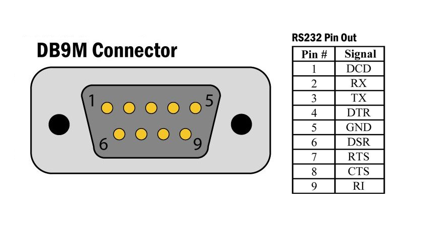
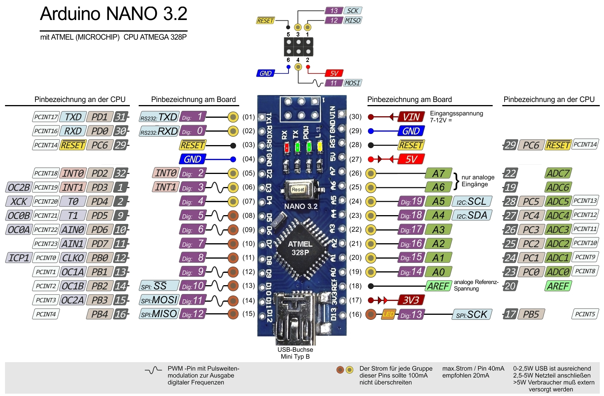
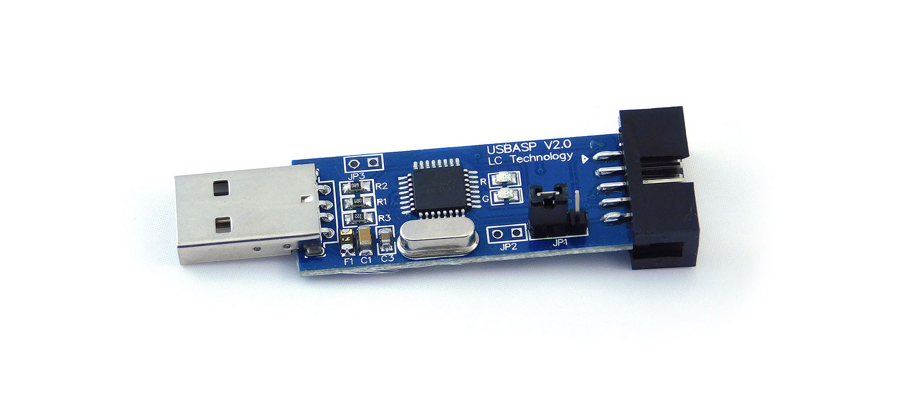
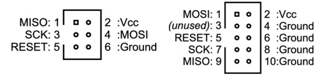
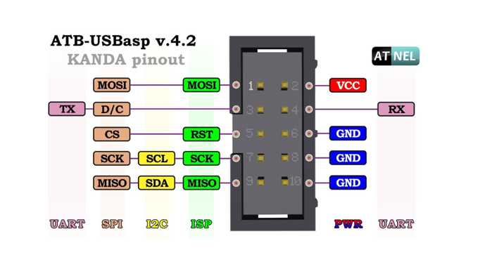

Programming, electronics, lifestyle
Fuse Bits – это конфигурационные биты AVR микроконтроллеров. Помимо Fuse Bits есть и другие типы конфигурационных битов. Однако многие всех их называют просто Fuse Bits или фьюзами. В этой статье я тоже буду использовать обобщенное понятие фьюзов (подразумевая разные типы конфигурационных битов). С помощью них можно отключить аппаратный интерфейс для прошивки, поменять источник тактовой частоты, отключить ногу RESET, запретить чтение прошивки из памяти, чтобы программу мк нельзя было скопировать итд.
Аналогичные биты есть и в семействе микроконтроллеров STM –
Option bytes.
В данной статье мы рассмотрим фьюзы в AVR микроконтроллерах (которые используются в основной линейке плат Arduino), на примере ATmega168P. Несмотря на схожесть с ATmega328P и тем более с ATmega48P и ATmega88P, мы не будем описывать полную информацию о фьюзах для всех этих микроконтроллеров. Это обосновано следующими причинами:
BOOTSZ1, BOOTSZ0, BOOTRST и биты BODLEVEL2, BODLEVEL1, BODLEVEL0 для ATmega168P и ATmega328P находятся в разных байтах (High и Extended). Повторение информации из даташитов для каждого микроконтроллера кажется избыточным, учитывая их ясное описание в официальной документации.В этом контексте не важно какой именно набор битов есть у того или иного микроконтроллера. Также, так как работа со фьюзами требует работы с аппаратным программатором, я затрону тему прошивки микроконтроллеров, аппаратных интерфейсов и работу с утилитой avrdude.
Наконец, выбор мк для меня обусловлен практической задачей использовать микроконтроллер ATmega168P с морально устаревшего полетного контроллера.
Прежде всего источником истины являются datasheets на микроконтроллеры. Обратите внимаение, что AVR микроконтроллеры производят две компании Atmel Corporation и Microchip Technology Inc. Ниже ссылки на самый распространенный ATmega328P и рассматриваемый мк:
ATmega48P / ATmega88P / ATmega168P – Atmel, MicrochipsATmega328P – Atmel, MicrochipsНа всякий случай, не поленитесь удостовериться в правильности данных представленных в статье, поискав по ключевым словам или соответствующим главам, к которым я буду далее ссылаться.
Также я взял много информации со следующих сайтов, в целом считаю полезным их к прочтению:
Почему Fuse Bits так называются? На данный момент конфигурационные биты записываются во флеш-память и их можно менять большое количество раз. Однако, раньше, когда флеш-памяти ещё не было, для хранения конфигурации микроконтроллера использовались специальные пережигаемые перемычки, похожие на предохранители, что на английском – fuse. Их можно было разово физически сжечь, включая какую-то функцию. Кстати, по этой причине, если перемычка цела – значит функция не задействована и наоборот: перемычку сожгли – значит она задействована.
Вся информация по программированию (записи каких либо данных в память микроконтроллера) описана в 27 главе, стр. 291. Конфигурационные биты делятся по группам состоящих из одного или нескольких байт.
Program And Data Memory Lock Bits или Lock Bits относятся к OTP (One-Time Programmable). После установки, сброс может быть сделан только с помощью HVSP (High Voltage Serial Programming) или HVPP (High Voltage Parallel Programming) программаторов.Fuse Bits в свою очередь делятся на 3 байта:
Fuse Low ByteFuse High ByteExtended Fuse ByteSignature Bytes – содержит три байта.Calibration Byte – содержит калибровочные значения для встроенного RC осцилятора. Описаны в главе 8.12.1, стр. 38 (OSCCAL – Oscillator Calibration Register). Подробнее о калибровке в самом конце статьи.Зачастую пользователь меняет Fuse Bits, и только в случае использования микроконтроллеров в продакшене – Lock Bits.
Чтобы поменять значение одного фьюза, нужно записать всю комбинацию фьюз битов байта в котором они состоят. Например, 11011001 представляет собой комбинацию fuse-битов для одного из байтов. Далее значение конвертируется в шестнадцатиричное представление и записывается с помощью программно-аппаратных средств в мк. О чем мы поговорим ниже.
Чтобы перейти к чтению Fuse Bits, вначале нужно аппаратно подключить мк к программатору. Поэтому далее я опишу способы прошивки, как более крупной темы и вторым пунктом расскажу про программаторы.
Прошивка – процесс при котором скомпилированный бинарный файл мы загружаем в определенное место во флеш-памяти микроконтроллера. ATmega168P как и другие AVR микроконтроллеры имеют два подхода к прошивки с использованием:
Использование загрузчика более распространено особенно, если речь идет про Arduino. Загрузчик – это такая же программа мк как и ваша, которая запускается первой, и находится в отведенном для неё месте. Цель загрузчика – при перезагрузки мк перехватить управление в случае передачи бинарного файла прошивки через UART интерфейс и записать данный файл во флеш-память.
Обычно, те кто только начинает свой путь в программировании микроконтроллеров на Arduino не совсем отдают себе отчет в том, как тогда устроена прошивка по USB. Дело в том что на большинстве плат Arduino находится USB - UART преобразователь. Помимо двух линий передачи данных (RX, TX) в преобразователе используется управляющая линия DTR (Data Terminal Ready), она подключается к ноге RESET микроконтроллера и отвечает за его сброс, собственно после которого и запускается загрузчик. Вот, как пример, схема платы Arduino Uno.
Зачастую даже те кто давно в электронике путают
UART(Universal Asynchronous Receiver/Transmitter) иRS-232(Recommended Standard 232). Иногда к этому ещё подмешиваю СOM-порт выполненного в разъёмеDB9:  СтандартыUARTиRS-232действительно очень похожи. Основное различие междуUARTиRS-232заключается в уровнях напряжения.UARTчасто используется внутри устройств и работает на низких уровнях напряжения (TTL(Transistor-Transistor Logic)), таких как 0 и 5 вольт, в то время какRS-232определяет более высокие уровни напряжения (обычно от -15 до +15 вольт) для внешнего обмена данными между устройствами. Подробнее разнице данных стандартов на UART, COM-порт, RS-232, что это и как они связаны?.
В случае наличия загрузчика в плате в которой нет встроенного USB - UART преобразователя, например, Arduino Pro Mini есть возможность прошить её по UART используя внешний преобразователь. Сложность заключается в нажать на кнопку перезагрузки мк в момент начала передачи прошивки (у меня это получилось с 20го раза). Ну и как вариант, просто подключить DTR линию внешнего преобразователя к ноге RESET.
Однако, если загрузчика нет или мы хотим поменять фьюзы нам необходимо подключение к специальном аппаратному интерфейсу. В AVR микроконтроллерах реализован ISP (In-System Programming) метод для прошивки, означающий программирование микроконтроллера, находящегося в цепи или в системе (имеется ввиду без выпаивания мк из платы). Одновременно с этим, я думаю, могие ещё встречали упоминание или обозначение ICSP (In-Circuit Serial Programming).
Оба термина ISP (In-System Programming) и ICSP (In-Circuit Serial Programming) используются в контексте программирования микроконтроллеров. Они оба означают программирование микроконтроллера, находящегося в цепи или в системе.
Однако, существует разница в использовании терминов в различных контекстах:
ISP (In-System Programming) – означает программирование микроконтроллера внутри системы, но может использоваться более широко, включая использование как последовательного, так и параллельного интерфейса.ICSP (In-Circuit Serial Programming) – представляет собой метод программирования микроконтроллеров, который позволяет записывать программный код напрямую в память устройства через последовательный интерфейс.Термин ISP может быть более универсальным. Если важен именно способ программирования (например, последовательное программирование), то ICSP может быть более точным термином.
Программирование по принципу ICSP в большинстве AVR мк происходит с использованием аппаратного интерфейса SPI (Serial Peripheral Interface) в котором используются линии:
SCK (Serial Clock)MOSI (Master Out Slave In)MISO (Master In Slave Out)RESET (не является линией SPI интерфейса, к нему подключается SPI линия SS программатора)Из-за чего разъём содержащей линии SPI на Arduino часто называют ICSP или ISP, подразумевая функцию данного разъёма.

В некоторых моделях мк AVR32 используют JTAG-интерфейс (Joint Test Action Group) который включает следующие линии:
TCK (Test Clock)TMS (Test Mode Select)TDI (Test Data Input)TDO (Test Data Output)Для унификации я тоже буду пользоваться термином ICSP как стандартом включающего в себя аппаратный интерфейс и метод для прошивки в мк ATmega168P.
Для прошивки через ICSP требуется программатор. Их достаточно много разных. Например, в качестве программатора можно использовать и другую плату Arduino загрузив туда специальную прошивку подробнее об этом в официальной документации от Arduino. Но я использую USBasp 2.0:

Подробнее о моём программаторе можно почитать в USBASP: USB AVR программатор для микроконтроллеров ATmega, ATtiny.
На большинстве программаторов разъём содержит 10 пинов, тогда как на всех платах Arduino (и не только на них), он 6ти пиновый.

Это сделано с заделом на будущее, чтобы залолжить другие функции например в новой версии USBasp появилась поддержка I2C и UART линий.

Для всех дальнейших действий с мк используется программа avrdude. Это командная строковая утилита, предназначенная для программирования микроконтроллеров AVR. Она является мощным инструментом для загрузки и выгрузки программного кода, управления фьюзами, а также выполнения других операций с микроконтроллерами AVR. Вы можете найти более подробную информацию о том, как можно её использовать в этой инструкции.
Её под капотом использует те же Arduino IDE или Platformio.
Теперь мы можем перейти к следующей теме.
Давайте для начала запросим общую информацию о мк с помощью аргумента -v:
Используйте соответствующий тип своего микроконтроллера (m168p, m328p), программатора и тип подключения.
> avrdude -c usbasp -P usb -p m168p -v
avrdude: Version 7.0
Copyright (c) Brian Dean, http://www.bdmicro.com/
Copyright (c) Joerg Wunsch
System wide configuration file is "/opt/homebrew/etc/avrdude.conf"
User configuration file is "/Users/urpylka/.avrduderc"
User configuration file does not exist or is not a regular file, skipping
Using Port : usb
Using Programmer : usbasp
AVR Part : ATmega168P
Chip Erase delay : 9000 us
PAGEL : PD7
BS2 : PC2
RESET disposition : dedicated
RETRY pulse : SCK
Serial program mode : yes
Parallel program mode : yes
Timeout : 200
StabDelay : 100
CmdexeDelay : 25
SyncLoops : 32
PollIndex : 3
PollValue : 0x53
Memory Detail :
Block Poll Page Polled
Memory Type Alias Mode Delay Size Indx Paged Size Size #Pages MinW MaxW ReadBack
----------- -------- ---- ----- ----- ---- ------ ------ ---- ------ ----- ----- ---------
eeprom 65 20 4 0 no 512 4 0 3600 3600 0xff 0xff
flash 65 6 128 0 yes 16384 128 128 4500 4500 0xff 0xff
lfuse 0 0 0 0 no 1 1 0 4500 4500 0x00 0x00
hfuse 0 0 0 0 no 1 1 0 4500 4500 0x00 0x00
efuse 0 0 0 0 no 1 1 0 4500 4500 0x00 0x00
lock 0 0 0 0 no 1 1 0 4500 4500 0x00 0x00
calibration 0 0 0 0 no 1 1 0 0 0 0x00 0x00
signature 0 0 0 0 no 3 1 0 0 0 0x00 0x00
Programmer Type : usbasp
Description : USBasp, http://www.fischl.de/usbasp/
avrdude: auto set sck period (because given equals null)
avrdude: AVR device initialized and ready to accept instructions
Reading | ################################################## | 100% 0.01s
avrdude: Device signature = 0x1e940b (probably m168p)
avrdude done. Thank you.
Ниже представлен пример чтения фьюзов рассматриваемого мк.
avrdude -c usbasp -p m168p -U lfuse:r:-:h
avrdude -c usbasp -p m168p -U hfuse:r:-:h
avrdude -c usbasp -p m168p -U efuse:r:-:h
avrdude -c usbasp -p m168p -U lock:r:-:h
avrdude -c usbasp -p m168p -U calibration:r:-:h
avrdude -c usbasp -p m168p -U signature:r:-:h
Также в одну команду поместить несколько опций -U последовательно.
Давайте на примере полученных данных о фьюзах разберемся как настроен данный мк.
| Byte | HEX | BIN |
|---|---|---|
| lfuse | 0xe2 | 11100001 |
| hfuse | 0xdd | 11011101 |
| efuse | 0xf9 | 11111001 |
| lock | 0x80 | 10000000 |
| calibration | 0xff | 11111111 |
| signature | 0x1e,0x94,0xb (0x1e940b) | - |
Все значения байтов читаются в шестнадцатеричном представлении, для дальнешей работы я перевел их в двоичное представление. В signature содержится три байта, и переводить их в двоичное значение ни к чему, тк нет деления функций привязанных к отдельным битам.
Начнем по порядку, рассмотрим Fuse Bits. Для упрощения работы с фьюзами я советую использовать AVR Fuse Calculator, например от engbedded.com.
Также я не буду рассматривать Lock Bits.
Данный байт отвечает за установку источника опорного тактового сигнала и его частоты. По умолчанию все контроллеры AVR (кроме старых серий AT90S2313, AT90S8535 итд.) сконфигурированы так, чтобы работать от внутреннего источника тактов. Т.е. стоить подать на них питание и они начинают работать.
| Номер бита | Название | Описание | Значение по умолчанию | Текущее значение |
|---|---|---|---|---|
| 7 | CKDIV8 | Divide clock by 8 | 0 | 1 |
| 6 | CKOUT | Clock output | 1 | 1 |
| 5 | SUT1 | Select start-up time | 1 | 1 |
| 4 | SUT0 | Select start-up time | 0 | 0 |
| 3 | CKSEL3 | Select Clock source | 0 | 0 |
| 2 | CKSEL2 | Select Clock source | 0 | 0 |
| 1 | CKSEL1 | Select Clock source | 1 | 0 |
| 0 | CKSEL0 | Select Clock source | 0 | 1 |
Бит CKDIV8 (Clock Divider Control Register) отвечает за деление тактовой частоты на 8. Установка этого бита приводит к уменьшению тактовой частоты системы в 8 раз.
Делитель частоты CKDIV8 влияет на скорость работы микроконтроллера и может использоваться для уменьшения энергопотребления, например, при работе от батареи. Однако, при включенной опции CKDIV8, частота работы микроконтроллера снижается, что также влияет на производительность.
Важно отметить, что независимо от значения бита
CKDIV8, можно программно изменять значение делителя в любой момент из программы. Для работы с этими функциями подразумевается использование фреймворка Arduino.
CLKPR = _BV(CLKPCE);– эта строка кода разрешает изменение делителя системной частоты. Она открывает доступ к записи в регистрCLKPR(Clock Prescaler Register)._BV(CLKPCE)– макрос, который создает значение с единичным битомCLKPCE(Clock Prescaler Change Enable). Установка этого бита разрешает изменение делителя системной частоты.Если делитель системной частоты был установлен через фьюз-бит
CKDIV8, то работа сCLKPRне сбросит его, однако отключит его работу.Регистр
CLKPRможет принимать следующие значения:
0x00: Это означает, что все битыCLKPSn(где n = 0, 1, 2, 3) установлены в 0. Что устанавливает делитель в 1 и означает, что системная частота не делится (или делится на 1). Следовательно микроконтроллер работает на максимальной частоте равной частоте источника тактового сигнала. Для установки используйте следующую командуCLKPR = 0;.0x01: Если установлен только битCLKPS0, то это устанавливает делитель в 2. Это означает, что системная частота уменьшается в 2 раза.0x02: Если установлен только битCLKPS1, то это устанавливает делитель в 4.0x03: Комбинация битовCLKPS0иCLKPS1устанавливает делитель в 8.0x04: Если установлен только битCLKPS2, то это устанавливает делитель в 16.0x05: Комбинация битовCLKPS0иCLKPS2устанавливает делитель в 32.0x06: Комбинация битовCLKPS1иCLKPS2устанавливает делитель в 64.0x07: Комбинация битовCLKPS0,CLKPS1иCLKPS2устанавливает делитель в 128.0x08: Если установлен только битCLKPS3, то это соответствует делителю 256.Подробнее в главе 8.12.2.
Чтобы установить только один бит используйте подобную команду:
CLKPR = _BV(CLKPS0);Если необходимо установить комбинацию битов используйте подобную команду:
CLKPR = _BV(CLKPS1) | _BV(CLKPS0);Значения в
CLKPRнужно устанавливать с осторожностью, учитывая требования к рабочей частоте вашего приложения и ограничения работы периферийных устройств на различных частотах. Так как фактически вы понизите частоту работы мк и такой частоты мб недостаточно для работы некоторых аппаратных интерфейсов. Кстати это относится и к прошивке мк черезICSP.
Бит CKOUT отвечает за вывод тактовой частоты на контакт CLK0 (D8 на плате Arduino Uno). Если бит запрограммирован (установлен в 0), то сигнал тактовой частоты выводится наружу, что полезно, например, для использования тактового сигнала другими периферийными устройствами. При использовании делителя тактовой частоты (задается битом CKDIV8) происходит вывод пониженной частоты.
Биты SUT1 и SUT0, совместно с битами CKSEL[3:0], устанавливают длительность задержки при включении микроконтроллера и выбор типа осциллятора (керамический или встроенный в кристалл). Задержка обеспечивает стабилизацию источника тактовой частоты после подачи питания. Величина задержки может быть от 0 до 65 мс. Возможные значения этих битов и соответствующие устанавливаемые ими параметры приведены в следующей таблице.
| Power Conditions | Start-up Time from Power-down and Power-save | Additional Delay from Reset (VCC = 5.0V) | SUT[1:0] |
|---|---|---|---|
| BOD enabled | 6CK | 14CK(1) | 00 |
| Fast rising power | 6CK | 14CK + 4.1ms | 01 |
| Slowly rising power | 6CK | 14CK + 65ms | 10 |
| Reserved | - | - | 11 |
По умолчанию Slowly rising power.
Если фьюз
RSTDISBL(описание бита ниже) запрограммирован, то время старта будет увеличено до14CK + 4.1msдля удостоверения, что режим программирования может быть включен.
Биты CKSEL[3:0] определяют источник тактового сигнала. В таблице ниже приведены возможные значения битов и соответствующие источники тактового сигнала, поддерживаемые микроконтроллером ATmega328P.
| Источник тактового сигнала | Значение CKSEL[3:0] |
|---|---|
Low power crystal oscillator. It gives the lowest power consumption, but is not capable of driving other clock inputs, and may be more susceptible to noise in noisy environments. In these cases, refer to Full Swing Crystal Oscillator |
1111-1000 |
| Full swing crystal oscillator | 0111-0110 |
| Внешний низкочастотный кварцевый генератор (32.768 кГц) | 0101-0100 |
| Внутренний RC-генератор на 128кГц | 0011 |
| Внутренний калиброванный RC-генератор на 8 MHz | 0010 |
Внешний сигнал синхронизации. На XTAL1 подаются прямоугольные импульсы. Такое иногда делают в синхронных системах, когда несколько контроллеров работают от одного генератора |
0000 |
| Зарезервировано | 0001 |
Неправильная конфигурация битов для выбора источника тактового сигнала может привести к блокировке кристалла. Однако полностью заблокировать кристалл путем установки битов
CKSELневозможно. Данную проблему можно решить подключением внешнего кварца или внешнего генератора тактового сигнала. Внешний генератор может быть собран, например, наК155ЛА3, чьи схемы легко доступны в интернете. Также возможны варианты с использованиемтаймера 555или написания программы для второго микроконтроллера, генерирующей сигнал тактового сигнала. При наличии осциллографа можно также использовать его для получения контрольного сигнала генератора, подключив его кXTAL1микроконтроллера.
В рассматриваемом мк изменено три значения lfuse, тем самым:
Идем далее:
| Номер бита | Название | Описание | Значение по умолчанию | Текущее значение |
|---|---|---|---|---|
| 7 | RSTDISBL | External Reset Disable | 1 | 1 |
| 6 | DWEN | debugWIRE Enable | 1 | 1 |
| 5 | SPIEN | Enable Serial Program and Data Downloading | 0 | 0 |
| 4 | WDTON | Watchdog Timer Always On | 1 | 1 |
| 3 | EESAVE | EEPROM memory is preserved through the Chip Erase | 1 | 1 |
| 2 | BODLEVEL2 | Brown-out Detector trigger level | 1 | 1 |
| 1 | BODLEVEL1 | Brown-out Detector trigger level | 1 | 0 |
| 0 | BODLEVEL0 | Brown-out Detector trigger level | 1 | 1 |
Бит RSTDISBL (RESET DISABLE) запрещает/разрешает внешний сброс микроконтроллера. Другими словами нога RESET превращается в порт ввода-вывода, но за это теряется возможность перешить контроллер через IСSP. Рекомендуется оставить его в значении по умолчанию, за исключением случаев, когда внешний сброс не требуется из-за ограниченного числа выводов.
Бит DWEN используется для включения специального отладочного интерфейса DebugWire микроконтроллеров AVR. Для работы по данному интерфейсу требуется специальный аппаратный программатор.
Бит SPIEN предназначен для отключения программирования микроконтроллера через SPI интерфейс.
Бит WDTON отвечает за работу сторожевого таймера (Watchdog Timer). Сторожевой таймер независим от других таймеров AVR. Если бит установлен (не запрограммирован), сторожевой таймер требует периодический сброс, иначе он сбросит микроконтроллер. Если бит установлен в 0, то программное управление сторожевым таймером невозможно, и он автоматически сбросит микроконтроллер при переполнении.
Бит EESAVE определяет режим стирания энергонезависимой памяти EEPROM. Когда он установлен в 0 (запрограммирован), при выполнении команды “стирание кристалла” данные в EEPROM сохраняются. При установке в 1, содержимое EEPROM стирается при выполнении этой команды.
Конфигурационные биты BODLEVEL определяют уровень срабатывания схемы BOD (Brownout Detection), которая следит за напряжением источника питания. Схема BOD сбрасывает микроконтроллер, когда напряжение питания опускается ниже определенного уровня. После того как напряжение питания восстанавливается до установленного порога (определенного битами BODLEVEL), сигнал сброса снимается, и микроконтроллер восстанавливает свою работу.
В таблице ниже приведены значения порога срабатывания схемы BOD в зависимости от установленных битов BODLEVEL для ATmega48P, ATmega88P, ATmega168P:
| BODLEVEL 2:0 Fuses | Min VBOT | Typ VBOT | Max VBOT | Comment |
|---|---|---|---|---|
| 111 | - | - | - | BOD Disabled |
| 110 | 1.7 V | 1.8 V | 2.0 V | - |
| 101 | 2.5 V | 2.7 V | 2.9 V | - |
| 100 | 4.1 V | 4.3 V | 4.5 V | - |
| 011 | - | - | - | Reserved |
| 010 | - | - | - | Reserved |
| 001 | - | - | - | Reserved |
| 000 | - | - | - | Reserved |
Изменить повторно состояние битов
SPIEN,RSTDSBLчерезSPIневозможно, для этого потребуется параллельный программатор с поддержкой высоковольтного режима программирования или подключение по интерфейсуDebugWire(еслиDWENвключен).
Соответственно в рассматриваемом мк изменен один бит – что включает BOD на 2.7 вольта. Ничего особо существенного это не меняет.
Рассмотрим третий конфигурационный фьюз байт:
В данном байте используются всего первые 3 бита, остальные зарезервированы.
| Номер бита | Название | Описание | Значение по умолчанию | Текущее состояние |
|---|---|---|---|---|
| 7 | - | - | 1 | 1 |
| 6 | - | - | 1 | 1 |
| 5 | - | - | 1 | 1 |
| 4 | - | - | 1 | 1 |
| 3 | - | - | 1 | 1 |
| 2 | BOOTSZ1 | Select Boot Size | 0 | 0 |
| 1 | BOOTSZ0 | Select Boot Size | 0 | 0 |
| 0 | BOOTRST | Select Reset Vector | 1 | 1 |
Биты BOOTRST, BOOTSZ0 и BOOTSZ1 в данном байте определяют размер flash-памяти, выделенной для загрузчика, и местоположение вектора сброса (точки откуда начинается исполнение программы мк).
| Начало секции загрузчика | Размер секции (слов) | Значение BOOTSZ [1:0] |
|---|---|---|
| 0x3F00 | 256 | 11 |
| 0x3E00 | 512 | 10 |
| 0x3C00 | 1024 | 01 |
| 0x3800 | 2048 | 00 |
Загрузчик представляет собой специальную программу, запускаемую в самом начале работы микроконтроллера, и выполняющую различные задачи. На платах Arduino этот загрузчик отвечает за запуск основной программы (скетча). По умолчанию для загрузчика выделяется максимальный размер – 2048 слов (байт). Однако, загрузчик мб и кастомным, зная его размер можно выделить минимально подходящее количество памяти. Оставив больше памяти под полезную программу.
Бит BOOTRST определяет адрес вектора сброса микроконтроллера – место в памяти откуда начнется исполнение программы при сбросе мк. По умолчанию адрес вектора сброса - 0х0000. Если же бит установить, то после подачи питания на микроконтроллер или после сброса микроконтроллер начнет выполнение программы из загрузочного сектора. Выбранного битами BOOTSZ0 и BOOTSZ1. Проще говоря, если вы хотите использовать загрузчик, например для прошивки мк через UART, то нужно включить данный бит. А если вы не хотите это использовать – вы можете начать запускать программу без использования загрузчика, однако в этом случае прошивка возможна только через ICSP программатор.
Как видно состояние этого байта - стандартное.
Для того, чтобы понять правильно ли настроен источник опорного тактового сигнала, давайте произведем замер времени функции delay(). Плата на которой находится мк имеет встроенный светодиод подсоединенный к контакту PB6. Я написал скетч, где светодиод светится 10 секунд, затем 10 секунд не светится.
#include <Arduino.h>
void setup()
{
// set PB6 as OUTPUT
DDRB |= (1 << DDB6);
}
void loop()
{
// set PB6 to HIGH
PORTB |= (1 << PORTB6);
delay(10000);
// set PB6 to LOW
PORTB &= ~(1 << PORTB6);
delay(10000);
}
Я веду разработку в VScode с помощью фреймворка Platformio. Данный фреймворк делает удобно две вещи:
avrdudeПо функциям это практически тоже самое, что и Arduino IDE. Но мне много, что в ней не нравится в целом AlexGyver хорошо изложил почему стоит использовать Platformio. Хотя для некоторых функций, вроде Serial Plotter, функции загрузки загрузчика я держу и Arduino IDE.
Поэтому давайте создадим файл platformio.ini в котором опишем, под какой мк нам нужно скомпилировать прошивку, а также по какому протоколу её загружать и с какими параметрами.
[env:ATmega168P]
platform = atmelavr
framework = arduino
board = ATmega168P
; board_build.f_cpu = 8000000L
upload_protocol = usbasp
; upload_flags = -F
; upload_speed = 9600
; upload_protocol = arduino
; upload_port = /dev/tty.usbserial-10
Я предумышленно оставил закомментированные строки, тк зачастую они бывают полезными. Например, если вы изменили частоту работы мк, вам может потребоваться указать другую частоту загрузки программы (через опцию
-B), чтобы раскирпичить мк. Другие параметры вы можете найти в данной инструкции.
Функции Platformio доступны в нижнем меню баре VScode (
Build,Upload,Clean,Monitorитд).
При попытки загрузить прошивку в мк, мы получим следующее сообщение:
avrdude: AVR device initialized and ready to accept instructions
avrdude: device signature = 0x1e940b (probably m168p)
avrdude: reading input file .pio/build/ATmega168P/firmware.hex for flash
with 586 bytes in 1 section within [0, 0x249]
using 5 pages and 54 pad bytes
avrdude: writing 586 bytes flash ...
Writing | ################################################## | 100% 0.63s
avrdude: 586 bytes of flash written
avrdude: verifying flash memory against .pio/build/ATmega168P/firmware.hex
Reading | ################################################## | 100% 0.40s
avrdude warning: verification mismatch
device 0xe0 != input 0xe1 at addr 0x00f3 (error)
avrdude error: verification mismatch
avrdude done. Thank you.
На самом деле прошивка НЕ прошла успешно. Скорее всего дело в параметрах куда записывается прошивка, например у меня продолжила исполнение предыдущая прошивка, хотя какая-то иинформация была записана в память. Полагаю прошивка записывается с отступом для загрузчика.
Для того, чтобы решить это, давайте выполним очистку памяти контроллера:
avrdude -c usbasp -p m168p -P usb -e
После чего можем успешно записать прошивку.
Можно прошить мк без Platformio, используя следующую команду (в этом случае производить стирание не обязательно):
avrdude -c usbasp -p m168p -P usb -U flash:w:.pio/build/ATmega168P/firmware.hex:iДанная команда, если не указывать параметр
-Dcотрет flash-память перед прошивкой.
После прошивки можно произвести тест. Замер времени показал вместо 10 секунд исполнение в течении 20ти. Что свидетельствует, о неправильно сконфигурированной частоте микроконтроллера, либо указания данной частоты в прошивке мк.
Теперь давайте раскомментируем в файле platformio.ini параметр board_build.f_cpu = 8000000L. Данный параметр передается в компилятор и указывает реальную частоту работы мк (с помощью данного параметра рассчитывается значение времени внутри программы). После чего произведенный тест уже показывает, что частота тактирования на мк задана корректно. Следовательно по умолчанию данный параметр установлен в значение 16000000L. Подробнее о параметре board_build.f_cpu здесь.
Также я бы подметил, что с использованием обычного секундомера на телефоне, каждый раз при измерении времени, мк выдает чуть меньшее времени чем нужно. Полагаю, что это связано с неточностью внутреннего источника тактового сигнала. Что можно настроить его с помощью калибровочных фьюзов. Информация по калибровке данных значений содержится в этом документе.
Иногда при прошивке с помощью программатора возникает ошибка
avrdude: warning: cannot set sck period, please check for usbasp firmware update, при этом она может вызвана двумя причинами:
- Плохим соединением
ISCPразъёма.- Устаревшей прошивкой на программаторе, подробнее как её обновить тут Прошивка USBasp.
Теперь запишем стандартные настройки в данный мк. Кстати приведенный выше AVR Fuse Calculator после выбора мк предлагает готовый аргумент для avrdude со стандартными фьюзами.
avrdude -c usbasp -p m168p -U lfuse:w:0x62:m -U hfuse:w:0xdf:m -U efuse:w:0xf9:m
Лог выполнения операции:
avrdude: AVR device initialized and ready to accept instructions
avrdude: device signature = 0x1e940b (probably m168p)
avrdude: processing -U lfuse:w:0x62:m
avrdude: reading input file 0x62 for lfuse
with 1 byte in 1 section within [0, 0]
avrdude: writing 1 byte lfuse ...
avrdude: 1 byte of lfuse written
avrdude: verifying lfuse memory against 0x62
avrdude: 1 byte of lfuse verified
avrdude: processing -U hfuse:w:0xdf:m
avrdude: reading input file 0xdf for hfuse
with 1 byte in 1 section within [0, 0]
avrdude: writing 1 byte hfuse ...
avrdude: 1 byte of hfuse written
avrdude: verifying hfuse memory against 0xdf
avrdude: 1 byte of hfuse verified
avrdude: processing -U efuse:w:0xf9:m
avrdude: reading input file 0xf9 for efuse
with 1 byte in 1 section within [0, 0]
avrdude: writing 1 byte efuse ...
avrdude: 1 byte of efuse written
avrdude: verifying efuse memory against 0xf9
avrdude: 1 byte of efuse verified
avrdude done. Thank you.
Попробуем запросить информацию о мк:
avrdude -c usbasp -p m168p -v
...
avrdude: AVR device initialized and ready to accept instructions
avrdude: device signature = 0x000104
avrdude error: expected signature for ATmega168P is 1E 94 0B
double check chip or use -F to override this check
avrdude done. Thank you.
Как видно данные возвращаются некорректно, попробуем отдельно запросить сигнатуру мк:
avrdude -c usbasp -p m168p -U signature:r:-:h
Выдаются разные значения:
...
0x010107
0x000304
0x010101
0x010304
0x010307
0x010106
...
Проблема в том, что сменилась частота мк потому что был выбран другой источник опорного сигнала и включено деление. Теперь я поставлю рандомную частоту программатора c помощью параметра -B.
Разница параметров
-bи-B:
- Параметр
-bиспользуется для установки частоты прошивки при использованииRS-232в baudrate.- Параметр
-Bиспользуется для указания периода тактового сигнала (bit clock) для интерфейсовJTAG,PDI,TPI,UPDIилиISP. Значение представляет собой число с плавающей запятой в микросекундах. Также можно указыватьHz,kHzилиMHzдля задания частоты, а не периода. Программаторы могут использовать разные значения по умолчанию (например, у меня – 2.5 мкс, кстати поменять значение по умолчанию можно в конфигурационном файле avrdude (на macos при установленном avrdude через brew по адресу:/opt/homebrew/etc/avrdude.confили в~/.config/avrdude/avrdude.rc)). Но рекомендуется всегда явно указывать значение bit clock, особенно если скорость чтения/записи важна.
avrdude -c usbasp -p m168p -B 125kHz -v
Работает. Методом тестирования я выяснил диапазон значений от 2.67 мкс до 2005 мкс (или если выразить в частоте от 187500 Гц до 500 Гц).
Давайте прочитаем фьюзы:
> avrdude -c usbasp -p m168p -B 125kHz -U lfuse:r:-:h -U hfuse:r:-:h -U efuse:r:-:h
avrdude: set SCK frequency to 93750 Hz
avrdude: AVR device initialized and ready to accept instructions
avrdude: device signature = 0x1e940b (probably m168p)
avrdude: processing -U lfuse:r:-:h
avrdude: reading lfuse memory ...
avrdude: writing output file <stdout>
0x62
avrdude: processing -U hfuse:r:-:h
avrdude: reading hfuse memory ...
avrdude: writing output file <stdout>
0xdf
avrdude: processing -U efuse:r:-:h
avrdude: reading efuse memory ...
avrdude: writing output file <stdout>
0xf9
avrdude done. Thank you.
После закомментируем параметр board_build.f_cpu, а также снизим длительность в программе до 1 секунды. Замер показывает время около 16 секунд.
Соответственно, это получилось потому что, по умолчанию параметр board_build.f_cpu равен 16000000L, а физическая частота 1 МГц (8 МГц от внутреннего опорного источника делится на 8), следовательно программа считала один импульс за 1/16, соответственно установка параметра board_build.f_cpu в 1000000L даст программе корректное понимание о частоте мк.
Теперь давайте уберем деление частоты на 8:
avrdude -c usbasp -p m168p -U lfuse:w:0xe2:m
Также поменяем board_build.f_cpu на 8000000L, теперь частота микроконтроллера 8 МГц. И длительность импульса в программе корректна.
Операжая читателя скажу, что калибровка с использованием моего программатора невозможна. И успешного примера далее не будет. Далее я лишь приведу небольшую выдержку из мануала по калибровке.
Как я уже подмечал выше, при проведении тестовов маргания светодиодом с использованием секундомера, каждый раз при измерении времени, мк выдавал мне чуть меньшее значение времени чем указано в программе. И это с учетом, что я включал секундомер, когда светодиод ещё не горел (одновременно с подачей питания), и выключал секундомер когда он погас.
Полагаю, что данная ошибка связана с погрешностью внутреннего источника тактового сигнала. Как я приводил выше основным источником информации по калиброке является мануал AVR053. Вот его Introduction я хочу процитировать как описание возможностей по калибровке:
This application note describes a fast and accurate method to calibrate the internal RC oscillator. It offers an easily adaptable calibration firmware source code, which can be used with any AVR with internal tunable RC oscillator. This firmware allows device calibration using the AVR tools STK500, AVRISP or JTAGICE, but can also be used for 3rd party calibration systems, e.g. based on production programmers.
The majority of the present AVR microcontrollers offer the possibility to run from an internal RC oscillator. The internal RC oscillator frequency can in most AVRs be calibrated to within +/-1% of the frequency specified in the datasheet for the device. This feature offers great flexibility and significant cost savings compared to using an external oscillator.
The calibration performed in the Atmel factory is made at a fixed operating voltage and temperature (25°C, typically 5V). As the frequency of the internal RC oscillator is affected by both operating voltage and temperature, it may be desired to perform a secondary calibration, which matches the specific application environment. This secondary calibration can be performed to gain higher accuracy than the standard calibration offers, to match a specific operating voltage or temperature, or even to tune the oscillator to a different frequency.
The calibration method described in this application note only takes a fraction of a second longer than reading the factory calibration byte from the signature row and writing it back to the to the device memory. Thus, the overall programming time is almost unaffected when performing calibration in the programming step in production.
Note that in some systems it may be more beneficial to perform run-time calibration of the oscillator. That may de desirable in applications that needs an accurate system clock over the entire temperature range and independent of operating voltage. In that case a watch crystal may offer a reliable and cost efficient solution. Runtime calibration is however not covered by the scope of this application note.
Кстати данная инструкция переведена на сайте gaw.ru.
Единственное, что мы можем сделать – прочитать текущее значение калибровки:
> avrdude -c usbasp -p m168p -U calibration:r:-:h
avrdude: AVR device initialized and ready to accept instructions
avrdude: device signature = 0x1e940b (probably m168p)
avrdude: processing -U calibration:r:-:h
avrdude: reading calibration memory ...
avrdude: writing output file <stdout>
0x80
avrdude done. Thank you.
Несмотря на то, что в инструкции AVR053 сказано, что могут использовать сторонние программаторы в документации на avrdude сказано следующее:
-O– Perform a RC oscillator run-time calibration according to Atmel application note AVR053. This is only supported on the STK500v2, AVRISP mkII, and JTAG ICE mkII hardware. Note that the result will be stored in the EEPROM cell at address 0.
При попытке калибровки мы получаем ожидаемую ошибку:
avrdude -c usbasp -p m168p -O
avrdude error: programmer does not support RC oscillator calibration
avrdude done. Thank you.
Если я в дальнейшем произведу калиброку встроенного источника тактового сигнала, изменю подпись мк или поменяю Lock Bits, то дополню эту статью.